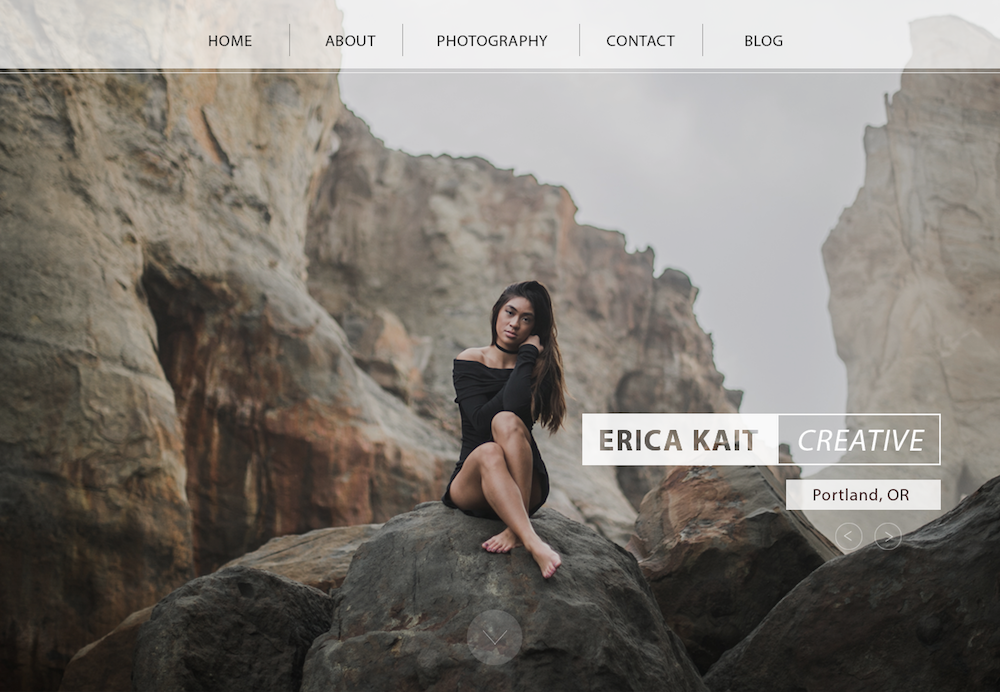
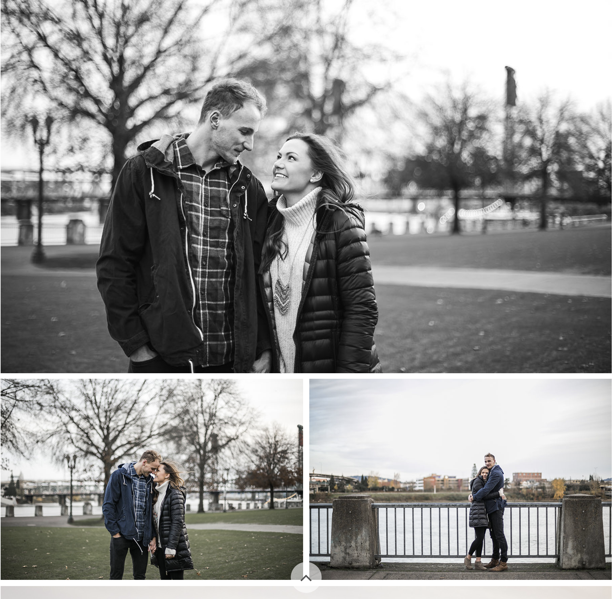
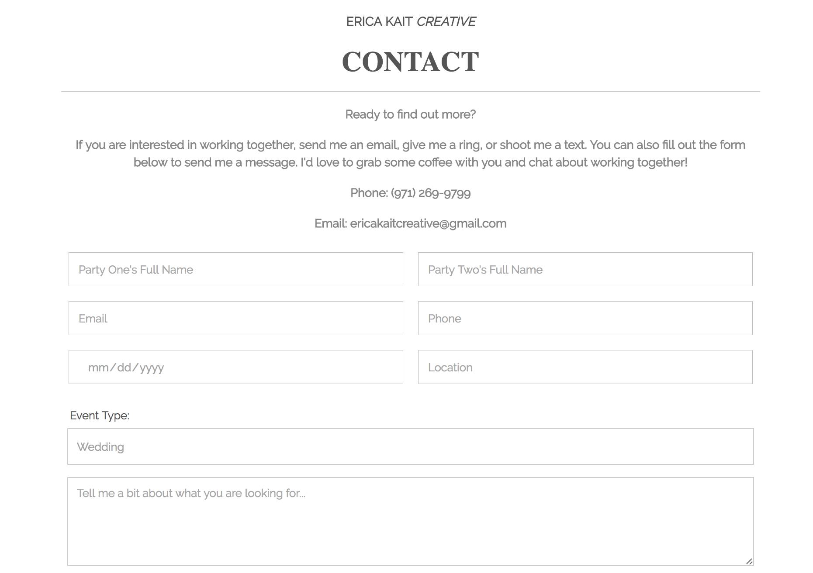

Erica Kait Creative is my photography business and part of what got me into front-end web development in the first place. Before my time at Epicodus I decided to tackle my own web presence with my limited knowledge of CSS and HTML from college. It went...alright, but two things were readily apparent:
Over the next several months I began looking into different ways to study programming before eventually deciding to enroll at Epicodus full-time. When I needed to submit a proposal for my first independent project at Epicodus, I knew that I wanted to completely redesign the Erica Kait Creative website from the ground up.
After deciding to revamp my website, I needed to figure out where to begin. I wanted a clear vision of how the site would look before I touched any code. I studied digital media in college so I'm pretty handy with the Adobe Creative Suite. Having not yet learned how to use Sketch at this time, I did some mockups in Photoshop for some of the main pages. I used my actual photography to give it a feel for how it would look once it was finished.
 Mockup for several of the main Erica Kait Creative web pages including the landing page and blog. I wanted a simple and straightforward style that highlighted my photography over anything else.The next step was moving into the actual code. I had exactly one week before we presented our projects so I had done the mockups over the weekend. That meant on Monday morning I jumped right into the code. I began with the landing page. I wanted this to have two sections the main hero slideshow and a secondary section with links to different pages with large images.
I created a large hero-sized canvas which would house the slideshow and the second section below and made sure both would play well with one another before tackling the slideshow itself which I will talk about in stage 3.
Another page I put a lot of focus on was the blog page. I had seen an example on another photographer's website with nice large images and hover effects with more information that gave a preview of what the blog post would contain. I used flexbox for this page as it allowed me to make the grid holding all the images easily responsive. The majority of my website viewers use their mobile phones so it was crucial that everything look as good on mobile devices as it did on a desktop.
 Erica Kait Creative blog preview on desktop, tablet, and mobile devices. You can see how the navigation changes on smaller screen sizes and the hover effect over images on the desktop version.
Erica Kait Creative blog preview on desktop, tablet, and mobile devices. You can see how the navigation changes on smaller screen sizes and the hover effect over images on the desktop version.Since mobile was such a huge aspect of the design I spent a lot of time researching the mobile nav. I looked through many other websites that I felt did a good job of solving the mobile navigation puzzle. I even added in a little custom animation to the hamburger menu.
Having a hero slideshow was another aspect that I knew I wanted for this website. What better way to show off photography than large images right on the landing page. I wanted to build this entirely on my own so I had started working on the code several weeks in advance. I had the arrows and smaller circle that showed your place in the slides working great, but I wanted the slideshow to also play automatically.
This ended up being great practice in learning to use the setInterval() function in JavaScript. I ran into a few bugs along the way. For example, once I had the interval set and a user clicked on an arrow it didn't reset the interval. So if they had clicked 1 second before the slide was going to change it appeared jumpy. To fix this I had the interval reset after any manual change made to the slides. After a few hours of debugging I was pretty pleased with the end result of the hero slideshow and it's something I've used on other projects since. Yay for reusable code!
As a photography website, I had to overcome the hurdle of managing many high-resolution photos. The trick was finding a balance between keeping the images high-res enough they didn't appear grainy on large desktop monitors, and web-friendly enough they could be quickly loaded by the browser. I'm no expert on this, but after much trial and error I feel like I found a happy medium for my site. This also got me looking into sprites which I'm considering using on future projects.
 Example of several images on a long blog post. Making sure images were displayed correctly in high-quality was a huge priority for this site.Since this is a static web page with blog content that I update once or twice a month I decided to use GitHub to host my site. I linked it to my custom domain name and after a few hours everything was live! I'm a huge proponent of using gh-pages for hosting static sites because it makes it easy to make changes to the code.
Google analytics is something I added onto this site several months after the initial launch to get a preview who is using the site. This is a tool I'm still experimenting with, but already I'm discovering where my users are coming from and browsers and devices they are using to view my site. I am very glad I made mobile such a primary focus after looking at the rate of mobile phones being used.
The design of this site is something that I will probably never completely stop. I think that is part of the fun for me, being able to constantly improve and adapt my work as I learn new skills. That being said, I'm happy with where I was able to get during an intense week of work on this project. I can feel my Sass skills constantly growing stronger with each project I take on and the same can be said for my front-end JavaScript/jQuery skills.
Another great thing I learned about during this project was a nifty tool called Formspree. Formspree ties a form submit to an email address. This made it practically effortless to set up a contact form for my site. On another note, I also discovered just how awful it is to override all the presets on form elements. How is there not an easier way to customize a select element!?
 Contact form which uses Formspree to send me an email anytime someone wants to contact me through the website. It took a fair bit of effort to customize the styling of all the input, button, select, and textarea components to get this very minimal form look.Head on over to ericakaitcreative.com to take a look at the final product. And if you need a photographer...I know a girl.